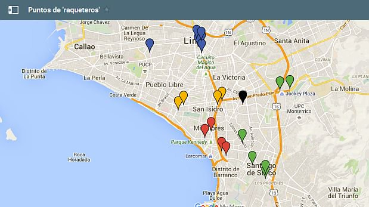

¿CÓMO SABER EN DÓNDE ATACAN LOS DELINCUENTES?
Para tratar de evitarlo, la Policía Nacional ha detectado varios lugares peligrosos para la población limeña en donde la delincuencia hace de las suyas con violencia arrebatando carteras y teléfonos celulares en sus “sitios claves”.
Algunos de estos lugares son: la Av. Javier Prado frente al colegio San Agustín, la Av. Las Begonias frente a una tienda por departamentos, la cuadra 6 de la Av. Camino Real, el cruce de las avenidas Tacna y Emancipación en el Cercado de Lima y la intersección de las avenidas Angamos y Arequipa en Miraflores.
Y generalmente, los asaltos a mano armada se ejecutan en las inmediaciones del centro comercial Camino Real, la calle 9 en San Isidro, la transitada Av. Pachacútec cuadra 3 y el cruce de la Av. Grau con la Av. Colina en Barranco.
